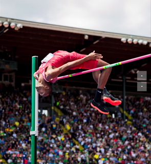
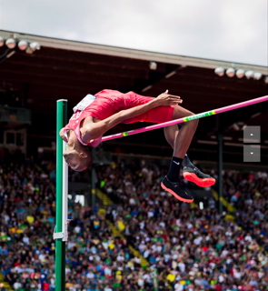

FIFA 2022 AMBASSADOR
As an outstanding athlete in Qatar and globally, Mutaz Barshim was chosen as an ambassador of 2022
FIFA WORLD CUP which will take place in Qatar in November-December 2022. Mutaz will take place in
all the FIFA events happening in Qatar prior to the World Cup and during it, will promote the event
in his social media accounts and engage his numerous fans around the world motivating them to come
to Qatar to enjoy the festival of football.
Recently Mutaz participated in a Draw which FIFA organized in April, which was attended by Emir of
Qatar, Sheikh Tamim bin Hamad Al Thani, as well as football legends and celebrities.
“It’s a great honour to announce that I am an official @FIFAWorldCup #Qatar2022 ambassador on the
@Roadto2022!
I’m looking forward to sharing the excitement with you as we build towards the tournament”. – said
Mutaz on his Instagam.
 
